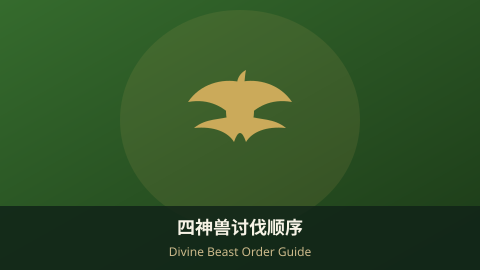
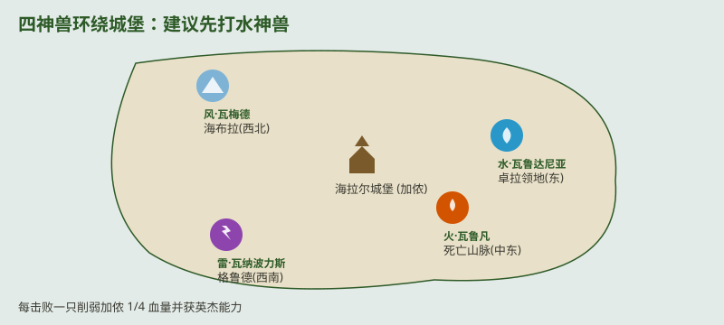

四神兽讨伐顺序建议（旷野之息）Divine Beast Order Guide (Breath of the Wild)

四神兽是《旷野之息》主线中期的关键目标。击败每一只都会削弱加侬 1/4 血量，并赋予你对应英杰的特殊能力。先打哪只，直接决定后续难度。下面是结合属性与机制的最佳顺序。The four Divine Beasts are the mid-game keystones. Each one you beat cuts Ganon's health by 1/4 and grants a Champion's ability. Which to tackle first shapes your whole run — here's the optimal order.
一、四神兽概览1. The Four Divine Beasts

- 💧 水·瓦鲁达尼亚 (Vah Ruta) — 卓拉领地（东）— Boss：水咒加侬 — 英杰米法：康复（战斗中自动回血）。💧 Vah Ruta (Water) — Zora's Domain (East) — Waterblight Ganon — Mipha's Healing (auto-regen in battle).
- 🌪️ 风·瓦梅德 (Vah Medoh) — 海布拉（西北）— Boss：风咒加侬 — 英杰力巴尔：英杰射（远程箭）。🌪️ Vah Medoh (Wind) — Hebra (Northwest) — Windblight Ganon — Revali's Revali's Gale (updraft).
- 🔥 火·瓦鲁凡 (Vah Rudania) — 死亡山脉（中东）— Boss：炎咒加侬 — 英杰达尔克尔：守护（自动盾防）。🔥 Vah Rudania (Fire) — Death Mountain (Central-East) — Fireblight Ganon — Daruk's Protection (auto-shield).
- ⚡ 雷·瓦纳波力斯 (Vah Naboris) — 格鲁德（西南）— Boss：雷咒加侬 — 英杰乌尔波扎：雷击（范围雷电）。⚡ Vah Naboris (Thunder) — Gerudo (Southwest) — Thunderblight Ganon — Urbosa's Fury (lightning strike).
二、推荐讨伐顺序与理由2. Recommended Order & Why
推荐：水 → 风 → 火 → 雷。Recommended: Water → Wind → Fire → Thunder.
- ① 水神兽（最简单）：机制最直观，给米法的康复能力，战斗中自动回血，容错最高。① Water (easiest): most straightforward; Mipha's Healing auto-revives/regen makes it the most forgiving.
- ② 风神兽：给英杰射（上升气流），跑图与空中作战更灵活。② Wind: Revali's Gale updraft boosts traversal and aerial fights.
- ③ 火神兽：需提前准备耐热装备/防火药剂，机制偏解谜。③ Fire: needs heat-resist gear/elixirs; puzzle-heavy interior.
- ④ 雷神兽（最难，留最后）：雷咒加侬对近战极不友好，建议拿到前三个能力、装备成型后再挑战。④ Thunder (hardest, last): Thunderblight Ganon punishes melee — tackle it after the other three abilities and better gear.
三、每个神兽内部3. Inside Each Beast
- 进入后需解谜控制若干终端（通常 5 个），重启神兽系统。Inside, solve puzzles to activate several terminals (usually 5) and reboot the beast.
- 终端全亮后触发对应咒加侬 Boss 战，击败即获得英杰能力。All terminals lit triggers the blight boss fight; winning grants the Champion ability.
- 每只神兽内还藏有 1 座神庙（计入 120 神庙）。Each beast also hides 1 shrine (counts toward the 120).
四、对最终战的帮助4. Help for the Final Fight
- 每击败一只，加侬血量上限降低 1/4，四只全清后最终战只剩 1/4 本体血。Each beast cuts Ganon's max HP by 1/4; all four leave only 1/4 for the finale.
- 四种英杰能力（康复/英杰射/守护/雷击）在城堡决战中可循环使用，大幅降低难度。The four Champion abilities (Heal / Gale / Protection / Fury) cycle in the finale and slash difficulty.
Boss 战手抖？ Switch Pro 手柄 摇杆更精准，完美闪避与瞄准更稳。Shaky boss fights? A Switch Pro Controller gives steadier sticks for perfect dodges and aim.
查看 Pro 手柄推荐 ↗View Pro Controller ↗
五、小贴士5. Tips
💡 实用建议：💡 Practical tips:
- 进兽前做几份对应抗性药剂（火兽耐热、雷兽抗电）。Cook the matching resist elixirs beforehand (heat for fire, shock for thunder).
- 雷神兽战脱掉金属武器/装备，否则被雷劈会直接掉血。In the thunder beast, drop metal gear or lightning strips your health.
- 优先把米法康复拿到，后续所有 Boss 战都更轻松。Get Mipha's Healing early — it eases every later boss.
- 配合本站高清地图规划四兽与城堡的最优路线。Use our HD map to plan the optimal route between the four beasts and the castle.
AdSense 广告位 2 · 文章底部AdSense Ad 2 · End of Article
审核通过后在此粘贴广告单元代码Paste ad unit code here after approval